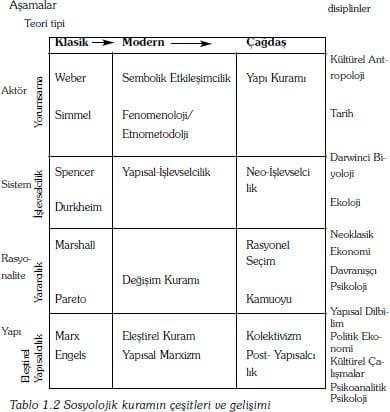

Bu bölüm, Ahmet Mazlum tarafından çevrilmiştir.
İki nedenden dolayı, sosyoloji, kurumsallaşmış akademik bir disiplin olduğunu haklı olarak iddia etmektedir. Bu nedenlerden birincisi; yaygın kabul görmüş kuramsal bir geleneğe sahip olması, ikincisi; araştırma yaparken, yöntembilimsel kesinlik bakımından ciddi çabalara girişmiş olmasıdır. Bununla birlikte, kuram, hitap ettiği kişilere, toplumsal dünyaya ilişkin söylenebilecekleri özetleyebildiğinden, sosyoloji disiplinini tanımlar niteliktedir. Bunun aksine, yöntembilim ise, söylenebilecek olanların ve söylenmiş olanların durumu hakkında, karar verebilmek için bir dizi kurala ve amaca ulaşmak için, araçlardan ibarettir.
Sosyoloji, insan toplumuna yön vermede ve insan bilgisinin gelişiminde önemli bir yer edinmek istiyorsa, kuram, her zaman sosyolojinin merkezi ve indirgenemez amacı olmalıdır. Eğer sosyoloji, kuramı, yoruma feda edecek olursa, tarihe veya gazetecilik düşüncesine doğru sürüklenir; eğer deneyciliği (empirizmi) seçerse, davranışçı psikoloji veya ekonomi biliminin insansızlaştırmasına ve gereksiz tekrarcılığına (totolojisine) saplanır; eğer dilbilim ve bilgi kuramı ile kendini sınırlayacak olursa, felsefe ve teolojinin skolastisizmine sürüklenir.
Sosyolojik kuram, ne birleştirilmiş ne de tamamlanmış bir projedir. Sosyolojik kuram, farklılaşmış özel uzmanlık alanlarının kısmen de olsa birbirine eklemlenmesinden oluşmaktadır. Fizikte, makro-mikro evren arasında yapılan nihai ayrıma neden olan, "kozmos kuramı" ile "parçacık kuramı"nın birleştirilebileceğine ilişkin çok ciddi bir umut doğmuştur. Sosyolojide ise, eylem-yapı, maddecilik-idealizm, bireyselcilik-bütüncülük, rasyonel araçsallık ve iletişimsellik, değer bağımsız-değer bağımlı, gibi özel ikilikleri/açmazları (dualities) çözebilmek için, elimizde henüz herhangi bir umut yoktur. Gerçekten de, günümüzde, hala tartışılmaya devam edilen sadece bu zıtlıklara odaklanan bir kitap yazmak mümkündür. Eğer sosyolojik kuram başarısız olmakla suçlanmak istemiyorsa, yazılabilecek böyle bir kitapta tartışmaların, çözümlenmiş olması gerekir. Kuramsallaştırma bir şeyi başarmaktan çok, bir süreç olduğundan, bu zıtlıklar ciddi konulara hitap edecek şekle sokulduğunda, sosyoloji kuramı fiziğin halihazırda yapmış olduğu ilerlemeyi yapabilir.
Bu kitabın odaklandığı nokta da tam bu ciddi konular üzerinedir. Sosyoloji kuramının söyleyebileceği konuları, kapsayıcı meseleleri ve bunlara ilişkin ileri sürdüğü iddiaları anlatmaktadır, fakat, böyle bir çabayı engelleyen açıklayıcı ikiliklerden uzak durmaktadır. Şurası da şaşırtıcıdır ki, bu tür inceleme konularının göreli olarak sayısı pek fazla değildir ve yine de, bu kadar yeni bir disiplinde kuramsal bir bütünleştirme ölçütünden bahsedilebilmektedir. Kuram üreten sosyologların (ortak bir uzlaşı alanı olmasa bile) ortak bir söylem alanında birbirleri ile ilişki içinde oldukları kabul edilir, ortak olarak ilgilendikleri konulara yönelmek için bir kavramlar sistemini paylaşırlar. Bu ortak kuramsal ilgi alanındaki konuları ortaya çıkarabilmek için, bu kitap, sosyolojik düşünmenin, içinde tartışmaların bitirildiği, birbirleri ile rekabet eden hatta çatışan paradigmaların (düşünsel kalıplarının, ç.n.) ya da düşünce okullarının bir araya gelmesi olarak tanımlanmasını kabul etmemektedir. Düşünsel rekabet, kesinlikle kuramsallaşmanın yapıldığı bir toplumsal süreçtir.
Sosyolojide kuramın ortak ama çok geniş bir gündeme sahip olmasının nedenlerinden birisi, tam olarak birleştirilmemiş olmasa da, göreli olarak birleştirilmiş kuramsal bir mirasa sahip olmasıdır. Sosyoloji kuramı, örneğin, kuramsal gelişmelerinin kaynak noktası olarak sadece Freud ve Marshall'ı gösterebileceğimiz, ekonomi ve psikoloji ile, kurucularını ya da önemli kuramcılarını belirtmenin zor olduğu, tarih ya da siyaset bilimi arasında, durmaktadır. Sosyolojinin araştırma konuları ve yaklaşımları büyük ölçüde, on dokuzuncu yüzyılın sonlarında yaşamış üç önemli kişinin çalışmalarına kadar götürülebilir; bunlar, Karl Marx, Max Weber ve Émile Durkheim'dir, fakat, sadece son ikisi kendisini sosyolog olarak görmektedir ve aslında sadece Durkheim, sosyologdur. Sosyolojinin basit bir şekilde klasikleri okumanın ötesine geçtiği bir dönemde olsak da, yine de, bu klasiklerin orijinalliklerini ve geniş bakış açılarını anlamamız gerekir. Bundan dolayı, bu kitap boyunca ele aldığımız konuların bu kaynaklardan geldiğini devamlı olarak kendimize hatırlatacağız.
Bu giriş üç bölüme ayrılmakta. Birinci bölüm, kuramın ne olduğu ve nasıl uygulandığı konusuna yoğunlaşmakta. İkinci bölüm, pedagojik olmasa da, bir metinsel uyumsuzluğu, kuramlaştırma ile klasik kuramlar arasındaki ilişkileri gösteren, sosyolojik kuramın tanımlamasını sunmaktadır. Bu kitap öyle alışık olmadığımız bir şekilde düzenlenmiştir ki, okuyucu belli bir kuramcı ya da kuramsal gelenek (izm'ler) ile karşılaştığında, geriye dönüp bunlara yeniden bakabilecek ve bu noktaları diğer gelişmeler ile olan ilişkileri bakımından yerli yerine oturtabileceklerdir. Üçüncü bölüm, kitabın ana temasını, her bir bölümde içerilen sosyolojik kuramın merkezi kavramlarını içermektedir.
Sosyolojik Kuramın Uygulanışı
Sosyoloji de, kuram kavramı tıpkı gündelik yaşamdaki kullanımı gibidir. Concise Oxford Sözlüğü'nde verilen tanımını, günlük anlamının bir göstergesi olarak alabiliriz: "Bir şeyi açıklayan varsayım, özellikle olaylar vb.'den bağımsız ilkelere dayalı olan bir şeyin, açıklamasına ilişkin varsayım" (1964:theory' maddesi). Shorter Oxford Sözlüğü sosyoloji gibi bir akademik disipline daha öz olarak uyabilecek bir tanımı da içeren birkaç tanım sunacak yere sahiptir: "Bir grup olgunun ya da fenomenlerin açıklanması ya da hesabı/özeti olarak düşünülen bir plan, düşünce sistemi ya da ifadeler;….Bilinen ya da gözlemlenen bir şeyin nedenleri, ilkeleri ve genel kuralları olarak belirlenen şeylerin ifadesi" (1973:theory'maddesi). Oldukça açıktır ki, sosyolojide gözlemlenecek şeyler toplumsal olaylardır/fenomenlerdir, yani, sosyoloji kuramı insanlar arasındaki ilişkiler ve karşılıklı etkileşimler üzerinde yoğunlaşmaktadır.
Şimdi bu tanımları, diğer sosyolojik uygulamalar karşısında duran kuramın kendine özgü niteliklerini ayırt etmek için kullanmaya başlayabiliriz. Sosyolojide kuram aşağıdaki ölçütleri karşılayacak şekilde, bilinçli olarak meydana getirilen önermeler dizisini içermektedir.
• Kuramlar, soyut olmalıdır; yani, hitap ettikleri toplumsal uygulamalardan ayırt edilmelidir. Kuram genellikle, sadece sosyolojik camiada/dünyada kullanılan teknik ve gizli kavramların gelişimi ile elde edilir.
• Kuram, belli bir konuda olmalıdır. Bir konuya özgü tartışma, bütün söz dizinlerini içermeli ve onlara güçlerini ve tutarlılıklarını vermelidir.
• Kuram, mantıksal olarak tutarlı olmalıdır. Önermeler birbirleri ile çelişmemeli, eğer olanaklı ise birbirlerini desteklemelidir.
• Kuram, açıklayıcı olmalıdır. Kuram, biçimini, özünü açıkladığı toplumsal olaylar hakkında bir tez ileri sürmeli veya tartışma oluşturmalıdır.
• Kuram, genel olmalıdır. İlke olarak, açıklamaya çalıştıkları herhangi bir gerçeğin ya da tüm gerçeklerin olaylarına uygulanmalı veya bunları açıklamaya çalışmalıdır.
• Kuram, bağımsız olmalıdır. Kuram, katılımcıların kendi davranışları için önerdikleri açıklamalara indirgenebilir olmamalıdır.
• Kuram, özsel olarak geçerli olmalıdır. Kuram, kendisine iştirak edenlerin, sosyologların ve diğer sosyal bilimcilerin söyledikleri ve toplumsal dünya hakkında bilinenlerle uyumlu olmalıdır. Asgari düzeyde de olsa diğer bilgilerin tümüne "çevrilebilme kuralları" olmalıdır.
Herhangi bir kuramcı için, kuram, yalnızca bu ölçütleri en üst seviyede karşılamayı hedefleyen, ancak daha genel kuramsal çabalara katkı olabilecek, düşünceler dizisinin gelişmesidir.
Bu, kuramın, sosyolojide her yerde aynı göründüğü anlamına gelmez. Genelde kuramın üç ayrı biçimi vardır: Biçimsel, anlamsal/öze yönelik (substantive) ve pozitivist. En kapsamlı olanı biçimsel kuramdır. Bu kuram, içinde toplumun ya da insan etkileşimlerinin bütünüyle açıklanabileceği kavram ve ifadelerin taslağını meydana getirmeyi hedefler. Genellikle, bu tür bir kuramın özelliği paradigmatik olmasıdır. Yani karşıt paradigmaların savlarına karşı, gelecekteki kuramsal uygulamalar için gündem oluşturmayı amaçlar. Bu tür bir kuram aynı zamanda temele yöneliktir (ya da kurucudur-foundational). Yani toplumsal yaşam için değişmez olan ve bunlarla her şeyin açıklanabileceği "tek bir ilkeler bütünü"nü tanımlamanın yollarını arar. Bu kitabın 2-5. bölümleri biçimsel ve kurucu kuram üzerinde yoğunlaşmaktadır.
Öze yönelik kuram bunun aksine, çok daha dar kapsamlıdır. Bu kuram, her şeyi açıklamayı amaçlamaz, fakat ya özgün (genel olarak bölümlere ayrılan) ya da toplumsal sürecin belli türlerini açıklamayı hedefler. Önceki kuram, sanayi toplumunun ortaya çıkış koşullarını ya da kapitalizmin devamını içeren kuramları içeriyor olsa da ikincisi, işçilerin yabancılaşması, siyasal egemenlik, sınıf tahakkümü, dinsel söylemler ya da "anormal/sapkın davranış kuramı"nı içermektedir. 6-9. bölümler sosyolojideki öze yönelik kuramın en genel örneklerini tarif etmektedir.
Pozitivist kuram,[4] değişkenler arasındaki deneysel (empirik) ilişkileri, bunların daha soyut kuramsal ifadelerden elde edilebileceğini göstererek açıklamanın yollarını aramaktadır. Gerçekten çok özgün soruları açıklamaktadır. Çünkü pozitivist kuramın özgün deneysel ilişkiler üzerinde bu kadar yoğunlaşmasından dolayı, bulguların etkili olduğu kanıtlanamamıştır. Bu nedenle bölüm 3'te bazı örnekler tartışılsa da bunun etkileri bu kitapta büyük ölçüde ele alınmamıştır.
Biz şu anda, -en azından biçimsel olarak- kuramı ve kuram türlerinin ne olduğunu biliyoruz. Bundan dolayı nasıl yapıldığına ve uygulandığına ve metodolojisinin ne olduğuna geçebiliriz. Basit bir yanıt, kuramın okuyarak, düşünerek, yazarak, yayımlayarak, ve tartışılarak yapıldığı, fakat, bunun bu sırayla olmasının gerekli olmadığını biliyoruz. Bize daha fazla yardımcı olacak biçimde kuramlaştırma, genel olarak aşağıdaki stratejilerin bir ya da daha fazlası tarafından geliştirilmiş (ilerletilmiş) olan –araştırmanın tersine- bir akademik çalışma süreci olarak kabul edilebilir.
• Siyasal ya da uygulamaya dönük bir gündem yaratma ve ileri bir düzeye taşıma: Burada sosyolog sıklıkla toplumun gerçek doğasını, onu değiştirme olasılık ve olanaklarını ortaya çıkarmak için açıklamayı amaçlar. Başlıca örnekler, feminist sosyolojik kuram (bölüm 8) ve eleştirel kuram (bölüm 5) dir. Bu kuramlar, insanlığı, baskıcı yapılardan kurtarmayı amaçlamaktadırlar.
• Mevcut kuramsal düşüncelere karşıt bir duruş sergileme: Burada kuramcı, mevcut kurama yapılan eleştiriye katılır ya da bir alternatif sunar. Örnek: Durkheim'ın Spencer'i eleştirmesidir (bkz. bölüm 9). Daha yakın zamanlarda ki örnek ise Giddens'ın Yapısallaşma Kuramı (bkz. bölüm 7) dır. Çünkü Giddens Yapısal-İşlevselciliğin ve Marxist Yapısalcılığın, insan güdülerini ve bunların sonuçlarını yetersiz bir biçimde değerlendirdiğine inanıyordu (bkz. bölüm 4).
• Kabul edilen kuramsal bilgeliğin birleştirilmesi: Bu, temel kuramsal katkıların, bunların arasındaki benzerlik ve yakınlaşmaları keşfetmek için okunmasını ya da yorumlanmasını içerir. Göreli olarak daha önceki bir örnek Parsons'ın, Marshall, Pareto, Durkheim ve Weber'in Gönüllü/bilinçli Eylem Kuramı'nı birleştirmesidir. Alexander ise Marx, Durkheim, Weber ve Parsons'ın katkılarını birleştirmeyi amaçlar. Mead, Schütz, Lukacs ve birkaç dilbilim felsefecisini de kapsamına alarak daha da ileriye gider (bkz. bölüm 5).
• Araştırma bulgularını uyarlama: Kuram ile araştırma arasında karşılıklı bir bağ meydana getirme, sosyolojinin temel konularından biri olsa da gerçekten bunun uygulanması çok enderdir. Aşağı yukarı diğerlerinden ayrılabilecek iki örnek; "küçük gruplar araştırması"ndan elde edilen bulguların Parsons ve Bales tarafından toplumun işlevsel emredici buyruklarına ilişkin bir tasarım geliştirmek için kullanılması (bkz. bölüm 4) ve Goldthorpe'ın "toplumsal hareketlilik araştırması" bulgularına dayalı yedi toplumsal sınıfın olduğu düşüncesi (bkz. bölüm 9 )dir.
• Basit yöntemlerin ortaya çıkarılması: Bu, kuramcının, bütün toplumsal hayatı açıklayabileceği, basit, biçimsel aksiyomatik (kendi kendine açık olan) ilkelerin bütününü keşfetmeye çalışan indirgemeci bir stratejidir. Bu stratejinin ilk temsilcileri Weber ve Simmel'di. Fakat, daha yeni dönemlerdeki temsilcileri Homans, Elster (bkz. bölüm 3) dir.
• Büyük olaylardan anlam çıkarmak: Kabul edilir ki, kuramın kaynağındaki ana etken, kapitalist sanayi toplumunun ortaya çıkışıydı. Geçiş dönemi o kadar şiddetliydi (kaotik) ki entelektüeller değişiklikleri anlamlı hale getirmek için eninde sonunda kuramlaştırmak zorunda kaldılar.
Bu çok sayıdaki alternatif stratejiler, sosyoloji kuramlarının ciddi bir şekilde çeşitlilik gösterdiklerini ileri sürmektedirler. Durum gerçekten budur ve bir sonraki bölümde bu temel yaklaşımlar anlatılmaktadır.
Sosyoloji kuramına yönelik yaklaşımlar
Sosyolojik kuramın sadece birleşik bir bilgi kümesi olduğunu söylemiştik. Aslında gelişim sürecinde bir grup iç içe geçmiş akımlar veya konular vardır. Bu bölüm karmaşıklığı basitleştirmeyi amaçlayan bir 'yol haritası'dır. Bu, Alexander tarafından geliştirilen kuramın temel öngörülerini ve varsayımlarını sorgulayan bir plana dayalıdır (bkz. şekil, 5.6). Planın, mevcut amaçlara göre yeniden düzenlenmiş, basitleştirilmiş bir biçimi şekil 1.1'de verilmektedir. Plan iki ayırım yapmakta ve dört tür kuram oluşturmak için onları kesiştirmektedir. İlk ayrım-kendisinin de oluşturulduğu öğelerin-kuramcıların inandıklarının toplumsal dünyayı oluşturan öğeler olduğuna yöneliktir. Kuramcı, toplumsal dünyanın yaratım, yorumlama, düşünsel ve eylemde bulunan öznelerden oluştuğu görüşünü kabul edebilir (öznellik); ayrıca, insanlık durumunun, içinde seçme ya da niyet şansının bulunmadığı değişmez ve ortak kısıtlamalarca belirlendiği gibi bir görüşü (nesnellik) de kabul edebilir. İkinci ayırım kuramcı tarafından sunulan açıklamanın biçimine yöneliktir. İlk açıklama türünde, toplumsal dünya bireysel katılımcıların her birinin özelliklerine, onların yalıtılmış anlam ya da ilgilerine 'indirgene'bilir (bireyci). İkinci tür açıklama bütünlüklere, kolektif düşün sistemlerine ya da paylaşılan materyal koşullarından bahseder (bütüncül, holistic). Planın ortaya çıkardığı dört kuram türü :
• Yorumsamacılık (öznel/bireyci) bireysel ve öznelerarası anlam ve güdüleri anlamaya çalışır. Burada insanlar aktif bir şekilde toplumsal dünyayı yaratan ya da oluşturan bileşenler ve iletişim ajanları, aktörleri olarak kabul edilir.
• Faydacılık/yararcılık (objektif/bireyci). Davranışı bireysel çıkarlar ve onları gerçekleştirmenin araçlarının hesap edilmesi olarak kabul eden görüş. Bu görüşe göre, insanlar sürekli olarak başkalarının zararına kendi yararlarını en çoklaştıracak hesaplar yapmaktadırlar.
• İşlevselcilik (bütüncül/öznel). Toplumsal düzenlemeleri yaygın bir şekilde paylaşılan normatif sistem tarafından belirtilen zorunlulukların karşılanmasına katkıları açısından araştırır. Bu görüşe göre insanlar, toplumsal ve ahlaki destek olmaksızın yaşayamayan, dinsel ve kültürel uyumculardır.
• Eleştirel Yapısalcılık, (bütüncül/nesnel). Gelişmeyi,önemli maddi yapıları ve bunların bireyler, toplumlar ve kültürler üzerindeki etkilerini zaman bakımından inceler. Burada insanlar, kendilerini yönlendiren ve benliklerini çarpıtan ve dönüştüren sosyo-ekonomik koşulların ve tarihsel konumlandırmaların kurbanları olarak kabul edilirler.

Üç gelişimsel aşama/dönem bu geleneklerin her biri için belirlenebilir: temel ilgi alanlarının ortaya çıktığı klasik aşama; her bir kuramsal konumun çok ayrıntılı bir şekilde incelenip geliştirildiği modern aşama; geleneğin gözden geçirildiği ve tekrarların birleşimine maruz kaldığı çağdaş yada postmodern aşama. Bu gelişmelerin iskeleti şekil 1.2'de belirtilmiştir. Şekil aynı zamanda sosyoloji kuramlarının her birine benzer olan ve onların arasındaki farklılıkların farkına varmada yardım etmesi gereken bazı benzer kökenli disiplinleri de belirlemelidir.
Bu dört tür kuramlaştırma, çağdaş dönemde yeniden formüle edilen, fakat Marx, Weber, Durkheim ve diğerlerinin eserlerinde kendilerinden önce gelenlere bağlanan sosyolojik gelenekleri simgeler. Bu gelişmeler şimdi taslak haline getirilebilir ve önde gelen uygulamacılar betimlenebilir. Bölümün sonuna doğru feminist kuramda sosyolojik kuramdan ayrı olarak gelişen fakat şu an onu etkilediği söylenen gelişmeleri de bulabiliriz.
Yorumsamacılık
Sosyolojik kuram oluşturmada yorumsamacılık akımı 19. yüzyılın sonları ve 20. yüzyılın başlarına Alman kuramcılar, Georg Simmel ve Max Weber'e kadar götürülebilir. Bu kuramcılar, Alman felsefesinde doğal ve kültürel bilimler arasında yapılan ayrımlardan ortaya çıkan büyük ölçüde benzer tartışmaları ortaya atmaktadırlar. Bu kişiler, insan davranışının temel olarak doğal nesnelerin davranışından farklı olduğunda ısrar ederler. İnsanlar toplumsal gerçekliğin oluşumunda aktif bir araçtırlar –davranış biçimleri ya da davranışlarına verilen anlamlara bağlıdır. Yani sosyolojik gözlemciler, katılımcılar tarafından meydana getirilen anlamları yorumlamalıdırlar/anlamlandırmalıdırlar.
Simmel, 20.yüzyılın başlarında Amerikan sosyoloji düşüncesini, özellikle Chicago Üniversitesinde George Herbert Mead tarafından geliştirilen bir yorumsamacı geleneğini etkiledi. Mead tarafından ortaya çıkarılan ve sembolik etkileşimcilik diye adlandırılan, düşünce okulu, aktörler arasındaki ilişkilerin dilbilimsel iletişim kalıplarına göre meydana getirildiğini kanıtlamaya çalışan bir sosyal psikolojidir. İletişim, her bir aktörünün içine girebildiği ve böylece ortak anlayışların paylaşıldığı ve toplumu oluşturan bir araçtır.
Weber'in etkisi, yüzyılın ortalarındaki Avrupa sosyolojisinin, özelliklede Alfred Schütz'ün eserinde çok daha etkili olarak hissedildi. Schütz, Weber'i bir fenomenolojik sosyoloji tesis etmek için Bergson ve Husserl ile ilişkilendirilen Avrupa felsefi fenomenolojik geleneği bakış açısıyla okudu. Fenomenolojik sosyoloji, aktörlerin toplumsal dünyayı duyu-verilerini, tipik örneklere veya zihinsel resimlere çevirerek yorumlama, biçimleri üzerinde yoğunlaşmaktadır. Schütz, bireysel tipleştirmelerin, öznelerarası olarak birbirleriyle ilişkilendirilebilme şekilleri ve bir sosyologun tipleştirmelerinin ve aktörün tipleştirmeleri arasındaki ilişkileri araştırmaktadır.
Fenomenolojinin, 1970'lerde gelişen daha radikalleşmiş bir çeşidi, toplumsal dünyayı bilimsel bir şekilde simgelemenin imkansız olduğunu ve bundan dolayı sosyologların aktörler gibi yorumlamaları gerektiğini savunan, etnometodoloji'dir.
İkinci bir yorumlayıcı düşünce grubu, bireysel güdülerden ve sebeplerden uzaklaşarak, büyük yapıları araştırır. Bazı örnekler, diğer akımlara doğru kayar – Parsons işlevselciliğin temel örneği oldu ve Habermas eleştirel- yapısalcı kampta kalmayı başardı. Bununla birlikte kaynağına en yakın olarak kalan bir örnek de vardır. Çağdaş ya da postmodern dönemde bu önemli katkı İngiliz sosyolog Anthony Giddens'ın ürettiği yapısallaşma (structuration) kuramıdır. Yapısallaşma kuramı, dengeli, büyük ölçekli toplumsal sistemlerin ortaya çıkması ile, yorumsal eylemler arasında bağlantı olduğunu göstermeye çalışır. Giddens için bunlar, aktörlerin kişisel amaçlarını gerçekleştirmek için, kurumsallaşmış bir şeyleri yapma yollarının niyet edilmemiş sonuçlarıdır.
İşlevselcilik
İşlevselcilik, toplumun biyolojik bir organizmaya benzediğini ilk ortaya atan İngiliz sosyal kuramcı Herbert Spencer tarafından 19. yüzyılda ileriye sürülmüştür. Bu anlayış, yavaş yavaş her bir işlevin hayatı idame ettirmeye ve toplumun idaresine olumlu bir katkıda bulunduğu bir noktaya doğru gelişti. Bununla birlikte, Spencer'in analizine en büyük eleştiriyi işlevselciliğin kurucusu, Fransız kuramcı Emile Durkheim yapmış ve Spencer'ı yeniden analiz etmiştir. Durkheim'in temel iddiası, toplumun parçalarının, kolektif bilinç tarafından birleştirildiğidir. Toplumsal eylem, özde dinsel ve ahlaki olan, paylaşılan kolektif bilince yapmış olduğu katkılar ile açıklanabilir.
İşlevselciliğin 20. yüzyılın ortalarındaki başlıca gelişmesi, Amerikalı Parson'un Weber, Durkheim, Marshall ve Pareto'nun eserlerini yorumlamasından ortaya çıkan yapısal-işlevselciliği ile olmuştur. Parsons temel olarak, yorumsayıcı bir biçimde, bütün bunların, "gönüllülük" (voluntarizm) adını verdiği toplumsal eylem kuramında kesiştiğini ileri sürdü; bu kuram, -Durkheim'de olduğu gibi-paylaşılan ortak normlara işaret etmekteydi ve Weber'de olduğu gibi aktörlerin bu normlar arasında seçim yapabileceğini dile getirdi. Bununla birlikte, toplumun eğer bir sistem olarak devam edecekse, belli yapı türlerinin işlevsel katkılarına ihtiyaç duyduğunu savunarak, yavaş yavaş Durkheim'in düşüncesine doğru ilerledi. Yapının değişim yönünün, kültür içeriği ve ortak bir normatif sistem tarafından belirlendiğini de iddia etmektedir.
Parsons 1979'da öldükten sonra, deneysel (empirik) araştırmalarda yapısal işlevselci planlarının yararını reddeden ve gittikçe etkisi artan pozitivist eleştirilerin ağırlığı altında ortadan kayboldu. Fakat, bu yaklaşımın, yeni-işlevselcilik adı ile yeniden yorumlanması Amerikan kuramcı Jeffry Alexander'ın etkisi altında 1980'lerin sonlarında yeniden canlanmaya başlandı. Neo-işlevselcilik, buradaki özette tartışılan kuramlaştırma konularının tümünü kapsayan çok boyutlu bir toplumsal kuram oluşturma çabasındadır.
Faydacılık
Faydacı sosyoloji düşüncesinin temelinde 19. yüzyıl klasik ekonomistlerinden Alfred Marshall bulunmaktadır. Marshall, insan etkinliklerini 'istekler', kişisel arzular veya hedefler ile ilişkili olarak açıkladı ve bir aktörün izleyebileceği toplumsal amaçların göreli değerlerini belirten anahtar olarak fayda/yarar/kullanılışlılık (utility) kavramını öne sürdü. Bu görüş için, daha sosyolojik bir temel, Marshall'ın çağdaşı olan, İtalyan siyaset iktisatçısı Vilfredo Pareto'da bulunabilir: Pareto, kolektif düzenlemelerin, kişisel memnuniyet arayışı ile ortaya çıkıp çıkmadığı sorusunu ilk soran kişiydi.
Bu düşüncelerin özellikle sosyolojik olarak gelişimi, 20. yüzyıl ortalarının Amerikan tarihçisi ve sosyal psikolog, George Caspar Homans ile anılan sosyal alış-veriş kuramında bulunabilir. Homans kurumsallaşmış, dengeli ilişkilerin, amaçlarını gerçekleştirmeye çalışan aktörler arasındaki etkileşimden ortaya çıkabileceğini saptamaya çalıştı. İstek-tatmin sürecinin diğer aktörlerden soyutlanma durumunda gerçekleşemeyeceğini başarılı bir şekilde saptadı.
Daha yakın gelişmeler, Pareto'nun belirttiği sorun üzerinde yoğunlaşmaktadır ve rasyonel seçim kuramı olarak bilinmektedir.İki çeşidi vardır: Jon Elster ve John Roemer'ın belirttikleri gibi, Marxist oyun kuramı, işçi sınıfı üyelerinin, devrime katılmayı kendi çıkarlarına uygun görüp görmedikleri noktasına yoğunlaşmaktadır. Kamu seçimi kuramı, devletin kişisel çıkarlardan nasıl ortaya çıkabildiği ve devlet aktörlerinin, kendi çıkarlarını nasıl en çok hale getirmek için nasıl davranacakları konusunda yoğunlaşmaktadır. Bu kuramlar ortak bir sorun ile birbirlerine bağlanabilir: rasyonel bireylerin, kişisel bedelleri içerebilecek kollektif girişimlerin takibine katılmaya nasıl ikna edilecektir?
Eleştirel Yapısalcılık
19.yüzyıl Alman siyaset iktisatçısı Karl Marx ve onun işbirliği yaptığı Friedrich Engels'in kuramlarında birbirleri ile ilişkili iki sosyolojik akım vardır. Bunlardan ilki, insan toplumlarının tarihinin, onun altında yatan maddi (maddesel) ilişkilerin tarihi olduğudur. İkincisi, insanların temelde açık ve yaratıcı olduğu fakat bu doğru mizacın maddi tarih tarafından bastırıldığıdır.
İlk akım, 20. yüzyılın ortalarında Louis Althusser ve Nicos Poulantzas'ın Fransız Yapısal Marxizmi'nde en olumlu şekilde geliştirilmiştir. Yapısal Marxizm, tarihi dönüşümlerin ekonomik temel, devlet ve ideoloji yapılarındaki çelişkilerin birleşiminin ürünleri olduğunu ileri sürmektedir. Bu savda aktör, tarihin ipinde özerklik ve irade olmadan sallanan bir kukla olarak düşünülür. İkinci ilişki, eleştirel kuram adı altında kamufle edilebilen ve Marxist konuların yanı sıra Weber'in konularını da içeren daha uzun bir tarihe sahiptir. Marxist düşünürler Antonio Gramsci (İtalyan) ve Györg Lukacs (Macar), ve Frankfurt Toplumsal Araştırma Okulu (Frankfurt Okulu)'nun çalışmalarında, (bunların hepsi de iki dünya savaşı arasında yer aldı) odak nokta, ideolojilerin nasıl inşa edildiği ve bunların bilince nasıl hakim olabilecekleri ve bunlara nasıl direnç gösterilebileceği idi.
Çağdaş dönemde Yapısal Marxizm neredeyse gölgede bırakılmıştır. Fransa'da ortaya çıkan ve Michel Foucalt ile ilişkilendirilen fakat Jacques Derrida'nın kuramında en açık halini alan radikal bir postyapısalcılık ile yer değiştirdi. Aslında post yapısalcılık, yapısalcılığı yeniden oluşturmaktadır. Fakat, bunu radikal ve eleştirel bir yönde yapmaktadır. Bu arada eleştirel kuram geleneğinin kendisi Alman sosyal felsefeci, Jürgen Habermas'ın iletişimselciliği olarak adlandırılabilecek olan oldukça gelişmiş bir aşamaya ulaşmıştır. Habermas, Marx, Weber, Mead, Schütz ve Parsons'ın kuramlarını bir araya getirmeye çalışmaktadır ve özneler arasılığın ve yorumun toplumsal alanı ticaret ve bürokrasi alanlarınca kolonileştirilmiş ve baskı altında alınmış olduğunu ileri sürmektedir.
Feminizm
Feminist kuram, toplumsal kuramın ana gelişme sürecinden bağımsız olarak gelişse de yine de bir dizi aşamadan geçmiştir (bölüm 8'de detaylıca tartışılmıştır). En geniş anlamda bu aşamalar şunlardır: Feminizmin ilk aşaması kadınların oy hakkını ve iş gücüne katılmayı amaçlayan ilk kadın hareketi dalgası ile ilişkilidir. Bu liberal feminizm olarak adlandırılabilir, çünkü fırsat eşitliği ile ilgili konulara yoğunlaşır. İkinci ve modern feminizm aşaması, toplumun bütünüyle cinsiyet-yapılı güç ilişkilerince gölgelenmiş olduğu görüşü ile ataerkillik kavramı üzerinde yoğunlaşmaktadır. Böyle bir feminizm sosyalist feminizmdir, çoğunlukla da Marxist feminizm denir. Çünkü, eğer cinsiyet eşitliği sağlanacaksa, toplumun tamamının yeniden inşa edilmesi gerektiğini ifade eder. Çağdaş dönemde ortaya çıkan bir paradigma da radikal feminizmdir ki bu cinsiyet farklılıklarının yapısal ve kolay kabul edilemez olduğunu ileri sürer. Cinsiyetin yeniden inşasının fizyoloji ya da psikoloji ya da cinsel tercihler ya da kadınların, erkeklerin bulunduğu kurumlardan geri çekilmeleri gerektiğini iddia etmektedir. Bu geleneklerin her birinden temsilciler bölüm 6'da verilmektedir.
Temel Kavramlar
Sosyoloji geniş bir cemaattir. Sosyolojide sadece kuramsal ayrışmalardan bahsetmek doğru olmaz, aynı zamanda kuramsal yönelimleri de sınıflama olanakları vardır. Bazı kuramsal araştırmalar tarih içinde kendiliğinden çıkmıştır, bazıları da, kuramsal 'okulları' ya da gelenekleri temsil etmektedirler. Bu kitap, sosyolojik kuramın temel düşünsel konularını ve onlar hakkında söylenenleri ele almaktadır. Bu konuların ilk dördü, diğer kuramsal yaklaşımlar içinde kurucu olarak tanımlanmaktadır. Bunlar; 'birey' (agency) (yorumsamacılık), 'rasyonalite' (yararcılık), 'sistem' (işlevselcilik) ve 'yapı' (eleştirel yapısalcılık)'tır. Bununla birlikte, bu kavramsal konuların hiçbiri, temeli oldukları yaklaşımların özel mülkiyetinde değillerdir. Bu nedenle, bu konular ile ilgilendiğimiz bölümlerde, bir çok kurama değinmeye çalışacağız. Örneğin, birey konusundaki bölümde sadece Mead, Schütz ve Giddens'in kuramlarını değil, aynı zamanda, Parsons'ın önerdiği işlevselci birey yaklaşımına değineceğiz ve yine eleştirel kuramı incelerken de Habermas'ın kuramına da yer vereceğiz.
Bu dört konudan her birinin içeriği şöyledir:
Birey
Bu konu, insanın öznelliğin alanının içinde yer almaktadır. Bir birey toplumsal dünyada bir eylemde bulunduğunda, bilincinde neler olduğu ile ilgilenmektedir. Aynı zamanda, öznelerin, eylemde bulunmak için, kendi davranışlarını, sonuçlarını ve güdülerinin anlamları ile ilgilenmektedir. Bireyi inceleyen bu konu, anlamların etkileşim içerisinde nasıl iletildiklerini ve bu şekilde dengeli öznelerarası toplumsal dünyanın nasıl kurulduğu konusuna kadar ilgi alanını genişletmektedir. Bu bölüm, öznelerin kendilerinin yaptıkları gibi, anlam ve güdüleri yorumlanması gerektiği görüşünde olan sosyologların çalışmalarına yoğunlaşmaktadır. Burada toplum, öznelerin algıları ve güdülerinin dönüşmesi ve değişmesi ile birlikte değişen insan yapısı bir inşa/yorum (construction) olarak görülmektedir. Aynı zamanda, bireysel ilgilerden kollektif düzenlemelerin nasıl çıkabileceğini göstermeye çalışan tartışmaları da gözden geçirmektedir.
Rasyonalite
Özellikle birey üzerinde odaklanma öznenin aklına nasıl erişilebileceği gibi yöntemsel bir sorunu da temsil etmektedir. Bazı kuramcılar, böyle bir şeyin, sadece rasyonel dediğimiz yani, özellikle bilinçli amaçlara yönlendirilmiş davranışlar bakımından, sınırlı eylem biçimlerinde yapılabileceğini ileri sürmektedirler. Bu bölümde, bu sınırlı kuramlar kadar, bütün davranışların rasyonelite ile yönetildiğine ilişkin diğer varsayımları da inceleyeceğiz. Bu varsayımlar, bütün davranışların hedef-yönelimli ve kişisel çıkar hesapları üzerine kurulduğunu varsaymaktadır. Rasyonaliteye ilişkin tüm varsayımların yüzleştiği temel sorun, bireyin aleyhine, sadece kolektivite düzeyinde sağlanan kazanımlara ilişkin açıklayıcı davranışlar sorunudur.
Yapı
Yapı konusu, belki de en az kavranılabilir bir konudur. Yapı, deneyimlerin (tecrübelerin, çn.) öneminin altını çizen, toplumsal düzenleme kalıplarına gönderme yapar. Bazı sosyologlara göre yapı, öznel deneyimlerin analitik soyutlamasıdır. Bununla birlikte, yapıya ilişkin bir şeyler söyleyen çoğu kuramcı, yapının, önceliği bireyden alıp yapıya veren ontolojik (varlık bilimsel) bir statü olduğunu da kabul etmektedirler. Bu formülasyonlarda/ denemelerde yapı, bireyin bilinçli deneyimlerini öyle belirler ki özne ve birey yok olur. Böyle yapılar, bilinçsiz bir zihinde, maddi ilişkilerde ya da sembolik mit ilişkilerinde ya da dilde yerleşik bir şekilde var olduğu kabul edilmektedir.
Sistem
Bir çok sosyoloji kuramcısı, kolektif toplumsal düzenlemelerin, katılımcıların öznel amaçlarından bağımsız gibi duran, bir mantık ve yönünün olduğu olgusundan gerçekten çok etkilenmişlerdir. Bu sosyal düzenlemeler, sistem adı ile anılan bütünleşmiş bütünlükler şeklindedirler. Sistemle ilgilenen kuramcılar, sistem parçalarının, nasıl olup da, bütünün devamına katkı yapacak şekilde bir araya geldiklerini ve dolayısıyla ayrı ayrı analiz edilemeyeceğini incelediler.
Dört düşünsel konudan oluşan ikinci grup belki de daha çelişkilidir. Bu, bunların biçimselden ziyade özsel olmasından dolayıdır ve sosyolojinin ana özsel konularına ilişkin daha fazla tartışma vardır. Bunlardan 4'ü şunlardır: "Kültür ve İdeoloji", "Güç ve Devlet", "Cinsiyet ve Feminizm", "Farklılaşma ve Bütünleşme". Bunlar şu temellerde ele alınmışlardır; genellik (toplumsal yaşamın her öğesinin bir yanıdırlar); süreklilik (tamamlanmış olduğunu iddia eden herhangi bir kuramda geçiyor olmalıdırlar); çelişkililik (bunlar mevcut tartışmaların temel noktasıdırlar); ve merkezilik (toplumsal yaşamın herhangi bir özsel alanını analiz etmede kilit görevi üstlenirler). Bu kriterlere dayalı olarak bu noktalar, ırk, etnisite, din ve sapma'yı içeren diğer birkaç aday konulara üstünlük sağlarlar. Din ve sapma, ele alınan diğer konuların alt ayrımında kalırlar (din, kültür ve sistem altında ele alınır ve sapma bir ölçüde birey'in konusuna girer). Irk ve etnisiteye ilişkin toplumsal kuramlar azgelişmişlerdir ve yetersiz düzeyde etkilidirler.
Kültür ve ideoloji
Burada kültüre kolektif bir fenomen/olgu olarak bakacağız. Kültür, genelde paylaşılan anlam, değer ve tercih algılamalarını içerir. Bölümün ilgi odağı, düşünce sistemlerini oluşturan ve sıklıkla "ideoloji" diye isimlendirilen kültür parçasıdır. Bu bölüm, ideoloji kavramının kaynağını özellikle de yorumsamacılığa karşı olan kuramsal varsayımları incelemektedir. Bunlar, kültürün materyalizm ve güç tarafından kapsanan toplumsal ilişkiler tarafından belirlenmiş olduğunu ileri sürmektedirler. Bunun için, bu tartışmalarda, maddi ilişkiler, bireyin bilincine yerleşen kültürel düşünceleri belirlemektedir. Nihai olarak, bu demektir ki, bireyler maddi güçlere, bu güçler sömürücü olduğunda bile, uygun hareket edeceklerdir. Bu şekilde, en uç ideolojik tartışmalarda, hem aktör, hem de rasyonalite açıklama dışında kalmaktadır.
Güç ve devlet
İdeoloji kuramları, o halde, kişisel çıkarlar ve amaçlar etkili düşünceler tarafından birleşebileceği bir düşünce önermektedir. Bu düşünce etrafındaki bazı tartışmalar "güç" kavramsal başlığı altında toplanabilir. Eğer insanlar kendi bireysel istek ve çıkarlarına karşı harekette bulunurlarsa bu, onların öyle yapmaya zorlandıkları için olmalıdır. Bu zorlamalar çeşitli şekillerde anlaşılabilir: bu zorlamalar diğer bireyler tarafından bilinçli olarak meydana getirilmiş ve uygulamaya sokulmuştur (yorumsamacı veya faydacı); toplumun nasıl koordine edilmesine dair çok soyut uzlaşmalar sonucunda ortaya çıkmıştır (işlevselci); ya da kökü eskilere dayanan ve büyük ölçüde fark edilmeyen gerçekliklerin sonucu olarak (eleştirel-yapısalcı).
Toplumsal cinsiyet (gender) ve feminizm
Sosyolojik kuramın gelişim tarihinin büyük kısmında, toplumsal cinsiyet (gender), tanımlanmamıştır. Şu anda bunun kuram için gerekli ve önemli bir konu olduğunun farkına varılmış olsa da, diğer konularla bütünleşememiş (göreli olarak diğer konuların dışında) onlarla ilgili bir konu olarak kalmıştır. Sosyologlar, toplumsal cinsiyet ile, örneğin, sınıf farklılıkları ya da bireylere ilişkin düşünceleri ilişkilendirmede çok başarılı değillerdir. Diğer kuramsal açıklamaların büyük bir çoğunluğu, toplumsal cinsiyeti önemsizmiş gibi ele almıştır. Bu, kısmen, şu anda mevcut toplumsal cinsiyet kuramlarının akademik sosyolojiden ziyade feminist akımın içinden çıkmış olmasından dolayıdır. Bu tür kuramların kaynağı, cinsiyet farklılıkları ve cinsiyet eşitsizlikleri konularıdır. Sosyoloji kuramının genel eğilimi, toplumsal cinsiyeti, cinselliğin (sex) kaçınılmaz ve doğal olarak cinsiyet ile birlikte ortaya çıkan bir şey olarak belirtmemek ve - son zamanlarda bu eğilimin tersini ifade eden bazı gelişmeler olsa da -sosyal bir inşa olarak görmektir.
Farklılaşma ve tabakalaşma
Bu konu, toplumsal dünyanın nasıl parçalara bölündüğünü ve sınırlar vasıtasıyla birbirlerinden ayrı tutulan birimlere nasıl ayrıldığı incelemektedir. Bu bölünmeyi ortaya çıkaran iki ana süreç vardır. Toplumu oluşturan her bir birim tarafından farklı aktivitelerin yerine getirilmesine dayalı olarak ortaya çıkar. Bu, işlevsel ya da yapısal farklılaşma diye adlandırılır. Bir veya daha fazla birim üzerinde hakimiyeti ya da üstünlüğü temelinde de ortaya çıkar. Bu tabakalaşma sürecinin ortaya çıkabileceği birkaç boyut/alan vardır. Fakat kuramın dikkati en çok çeken biçimi, toplumun sınıflara ayrışmasıdır.
Bu kitabın düşünce ekollerine dayalı olarak oluşturulmadığı, fakat, sosyolojik kuramın ana kavramsal konuları ve temalarına dayalı olarak oluşturulduğu yeniden ifade edilmelidir. Bununla birlikte, bazı bölümler bir temanın ana geleneğini izini takip ederek ilerlemektedir. Örneğin, sistem hakkındaki bölüm, sistem teriminin gelişimini, Durkheim'dan başlayarak Parsons ve Alexander'la devam ederek, geniş bir işlevselci kapsam içinde incelenmektedir, Habermas'la bitirilmektedir. Diğer bölümler, kuramsal spektrumdaki geleneklerden değişik öğeler çekerek, daha seçicidirler. Kültür, güç, toplumsal cinsiyet ve farklılaşma hakkındaki bölümler bu şeklidirler. Bununla birlikte, birey konusunda göreli olarak yorumcu bir gelenek etrafında şekillenen bir bölümle başlıyoruz.